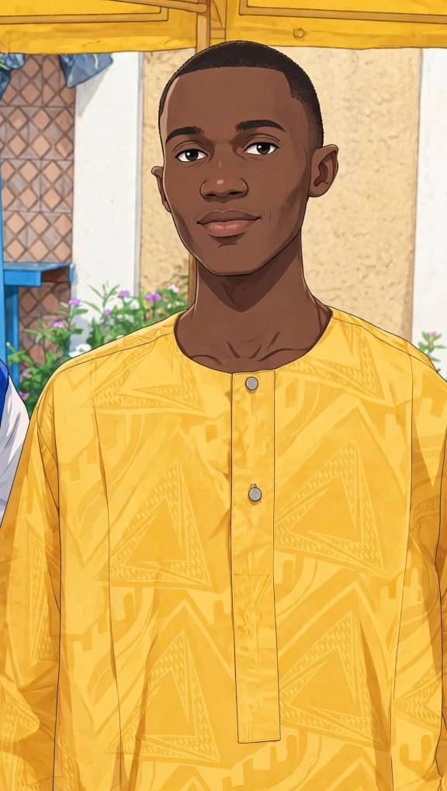

À propos de moi

Qui suis-je ?
Je suis Léandre Loth, j'ai 33 ans, Je viens de Konoha. j'ai une détermination que rien ne peut arrêter.
Mon parcours
Je vous le raconte. Vous allez trouver celà étrange mais j'ai 2 bacs, un en littérature(A) et l'autre en série scientifique(D). Je suis en Génie Informatique depuis bientôt 2 ans, je voudrais bien vous faire une petite liste des langages de programmation que je connais, mais j'ai la flemme. Si vous voulez en savoir plus sur moi, rendez-vous sur la page contact et contactez moi😉
Mes aspirations:
Je me vois bien devenir astronome, astronaute ou pilote. Mais en vrai ce que j'aime par-dessus tout c'est l'armée.